| Feste principali | Date | Descrizione | |
|---|---|---|---|
| Festival della Valtellina | Fine settembre (dura qualche giorno) | Il Festival della Valtellina è un evento enogastronomico e folkloristico itinerante che celebra la tradizione culinaria e culturale della regione della Valtellina, portandola in diversi borghi della Lombardia. Quando si svolge a Bottanuco, tipicamente in piazza mercato, l’evento propone piatti tipici, specialità valtellinesi e un’atmosfera da festa popolare. |
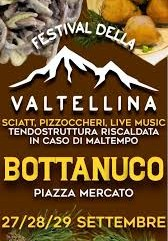 |
| Festa Alpina | Dal 12 al 15 giugno | Festa organizzata dall'associazione di alpini di Bottanuco, è un momento di riunione per la comunità. Per l'occasione in oratorio sono allestiti tendoni e tavoli per mangiare cibi tipici, ogni anno ci sono band o altri eventi ad animare la festa. |
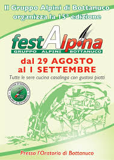 |
| Festa dell'Oratorio di Cerro | Dal 16 al 25 maggio | Si tiene in frazione Cerro, è una festa che dura diversi giorni, con griglia/pizzeria, bar, musica dal vivo, specialità e serate conviviali. |
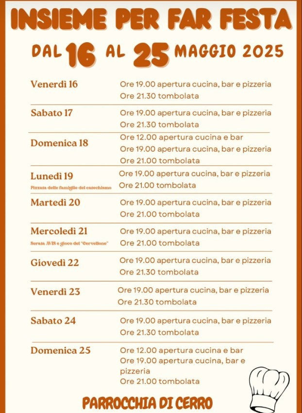 |
| Festa della Madonna | Prima domenica di ottobre | La festa consiste in una processione in cui tutto il paese è impegnato, in particolare si festeggiano coloro che quell’anno compiono 50 anni e sono coinvolti nel trasporto della madonna, con feste prima e dopo la celebrazione. |
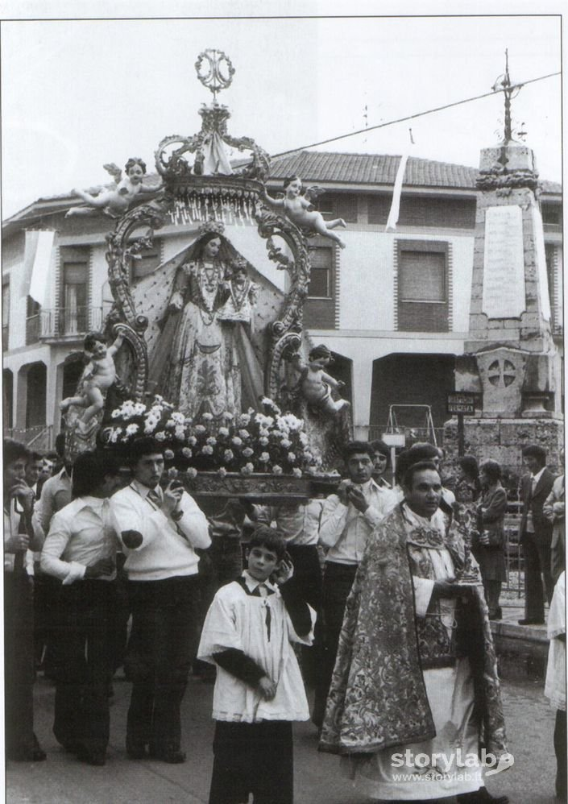 |
| Festa della Pianta | Notte tra il 30 aprile e il 1 maggio | La “pianta”, tradizionale rito di passaggio alla maggiore età per gli adolescenti di Bottanuco, prevede che i neo diciottenni, dopo una serata di festa, erigano un tronco, nascosto nei giorni che precedono l’evento, nel terreno, cercando di vincere il sabotaggio dei più grandi e dei coetanei dei paesi vicini. Il tronco viene tagliato dai ragazzi e trasportato in un nascondiglio, la sera della festa questi cercano di ergerlo mentre gli altri ragazzi di altri paesi e età li sabotano tappando la buca, buttando fumogeni, rubando attrezzi e bevande alcoliche. Un’usanza che va avanti da decenni grazie ad un tacito accordo tra le giovani generazioni e i residenti. Spesso questa tradizione ha subito critiche a causa di incidenti accaduti o atti di vandalismo. |
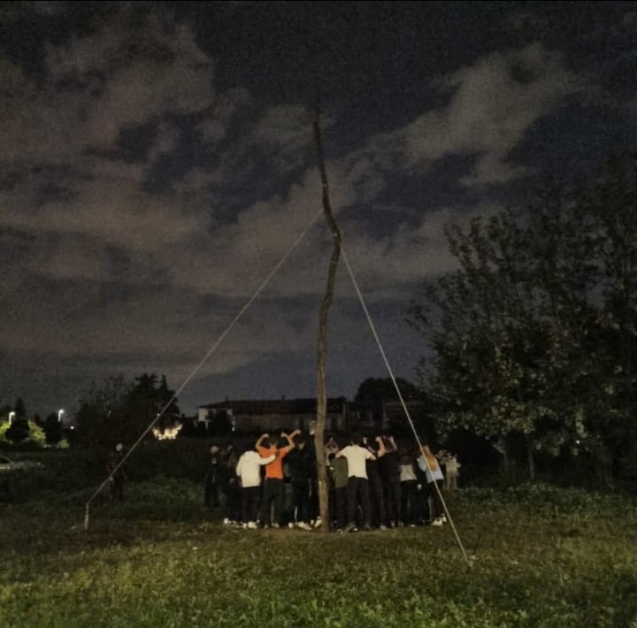 |
| Beer Festival | Dal 23 al 25 agosto | La festa è un evento conviviale con musica, buon cibo e birra. Si svolge in un’area coperta con tavoli, dove si possono gustare piatti tipici, specialità alla griglia e diverse birre alla spina. L’atmosfera è informale e vivace, pensata per passare una serata in compagnia tra musica, gastronomia e divertimento. |
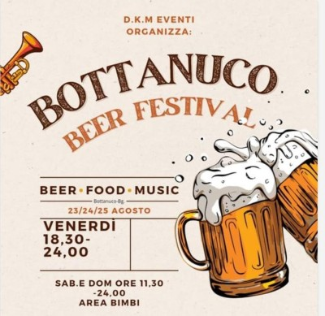 |
“I Sifoi” sono un gruppo musicale popolare di Bottanuco, nato nel 1867 e legato alla tradizione del flauto di Pan, chiamato urgibeni. Le origini risalgono a Cesare Scotti, figura centrale nella costruzione degli strumenti e nella diffusione della musica popolare. Nel corso del Novecento il gruppo viene guidato da diversi maestri (tra cui Vincenzo Gumier e Pietro Foglieni) e partecipa a feste, eventi civili e manifestazioni anche fuori dall’Italia. Il gruppo mantiene un repertorio tradizionale e usa strumenti artigianali costruiti secondo tecniche antiche. Dal 1991 è costituito ufficialmente come associazione e rappresenta una delle tradizioni culturali più radicate del paese.Nel 2017 l’inno ufficiale del comune è diventato la “Marcetta bottanuchese”, composta nel 1927.
Luigi Madona è il fratello Maggiore del maestro Angelo Madona, pur non avendo mai fatto parte della “Musica delle Canne di Bottanuco”, ha composto e trascritto per pianoforte varie marce, poi suonate dal Gruppo. Veniva definito “Il Professore”. La Marcetta Bottanuchese è stata dedicata al padre morto nel tentativo di domare un incendio in località Cerro.
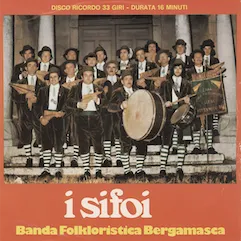
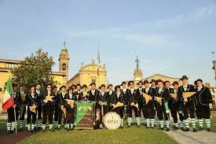
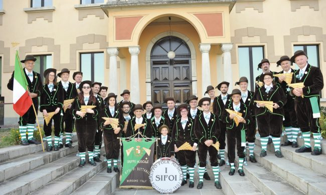
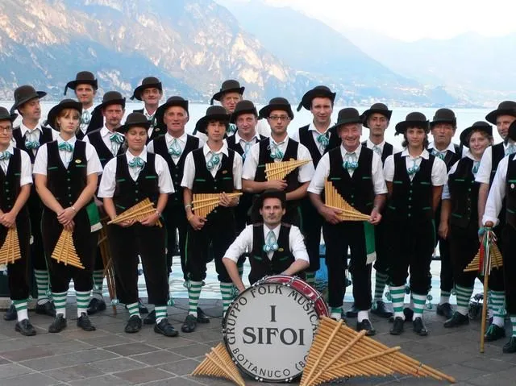
A Bottanuco il tamburello è stato a lungo uno degli sport più praticati e popolari. Tra gli anni ’40 e ’70 il paese vantava diverse squadre che disputarono campionati provinciali e nazionali, giocando nei prati vicino alla chiesa e coinvolgendo l’intera comunità.
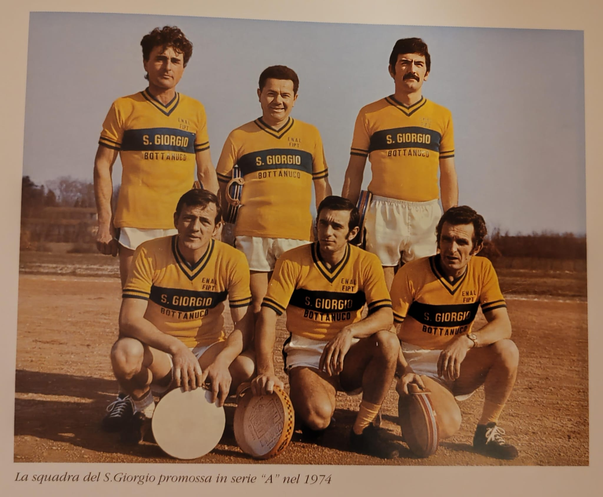
“N’sö e n’zò de l’Adda” è una camminata non competitiva organizzata a Bottanuco che si svolge lungo le sponde del fiume Adda, permettendo ai partecipanti di godere del paesaggio fluviale e di fare un percorso “su e giù” adatto a tutti, con percorsi di diversa lunghezza (7, 12, 16 km). Si combinano sport, natura e socializzazione.
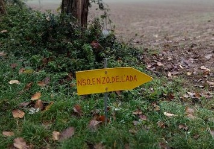
Il calcio a Bottanuco ha origini legate all’oratorio del paese, con squadre dilettantistiche nate negli anni 2000 per promuovere sport e aggregazione giovanile; negli anni la struttura ha subito cambiamenti e periodi di inattività, fino alla recente rinascita della società A.S.D. Calcio Bottanuco nel 2024.
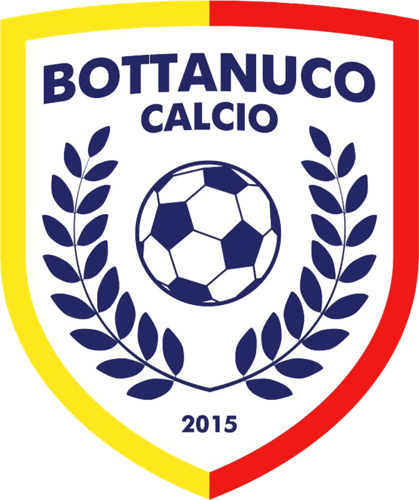
I piatti tipici di Bottanuco e della zona bergamasca includono i casoncelli e gli scarpinocc, due tipi di pasta fresca ripiena fatti a mano. Altre specialità sono gli gnocchi di patate di Pontirolo con sughi locali, polente con formaggi e funghi di stagione, carni brasate e dolci come la sfoglia di frolla con mele caramellate.
- Casoncelli alla bergamasca
- Polenta taragna
- Salumi locali (salame, pancetta, coppa)
- Formaggi della tradizione orobica
- Diversi piatti casalinghi serviti durante sagre, feste parrocchiali e serate di paese
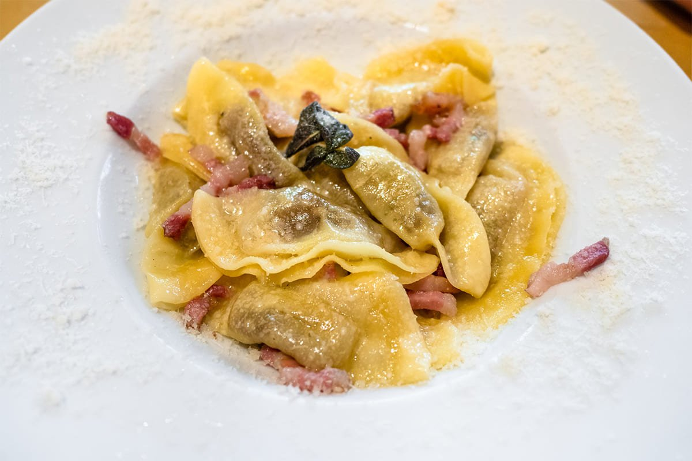
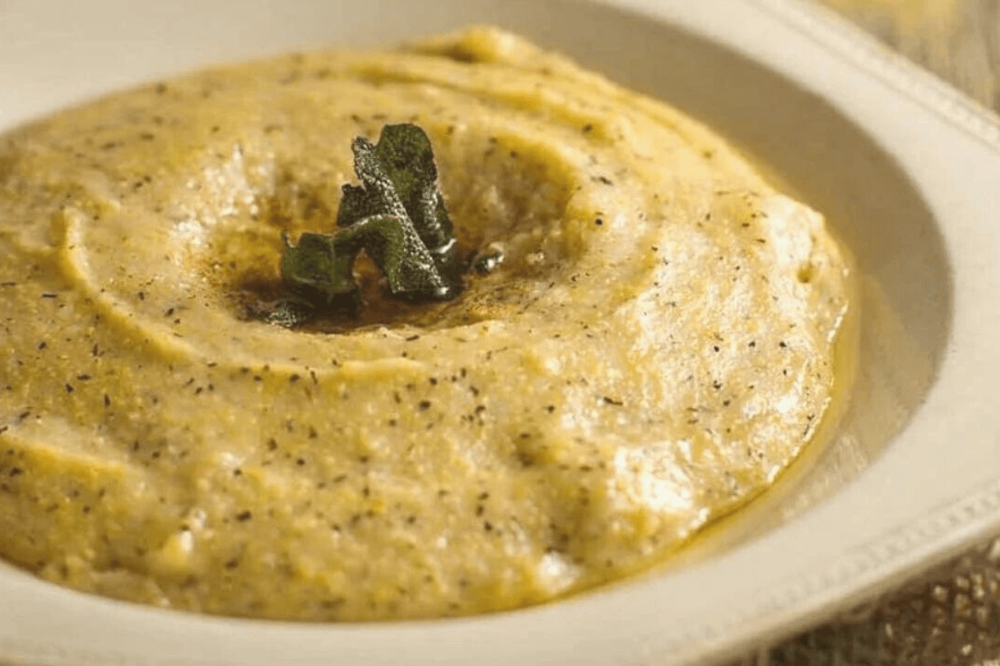
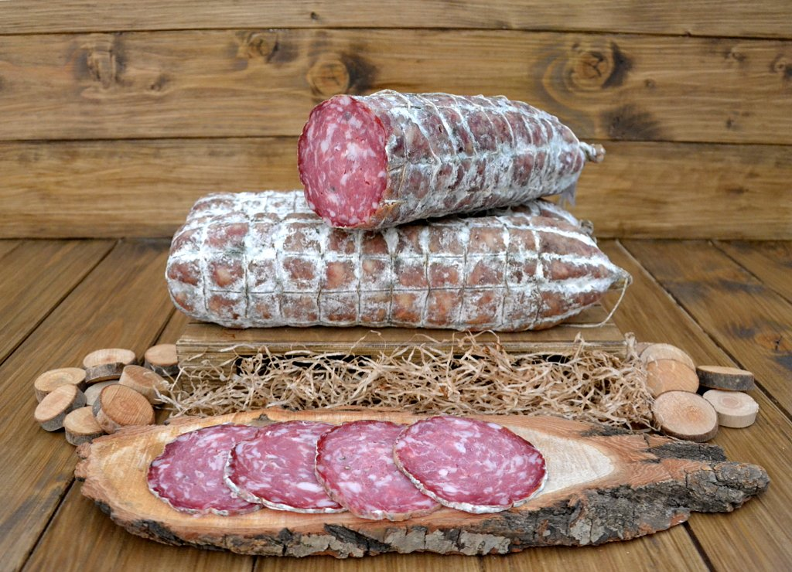
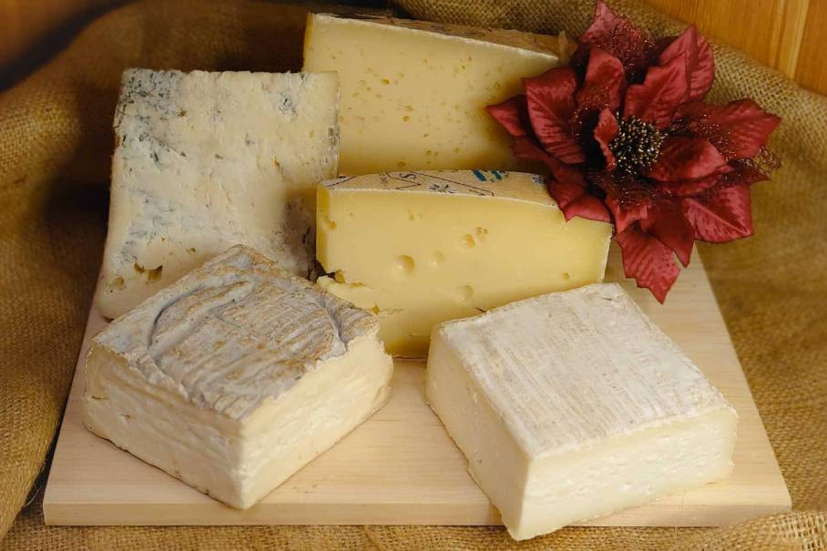
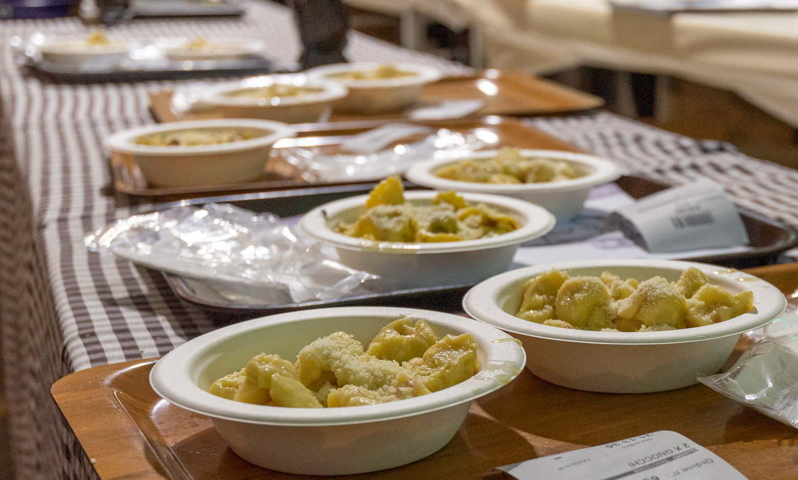
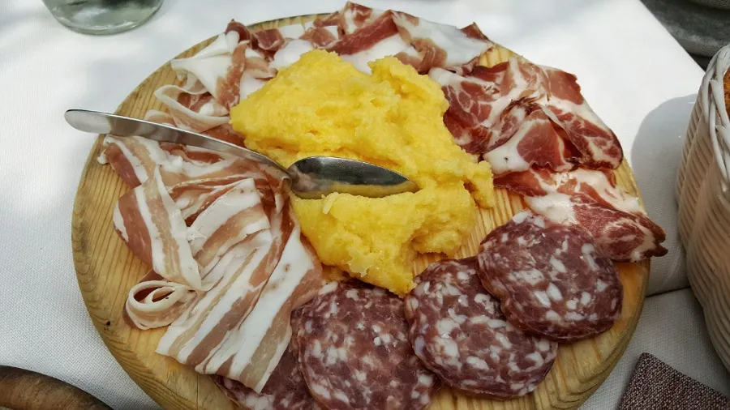
| Associazione / Gruppo | Che cosa fa / attività principale |
|---|---|
| Mediaisola | Associazione di promozione sociale nata nel 2008; organizza eventi di socializzazione, cultura, musica, teatro, arte e iniziative varie per la comunità. |
| Amici del teatro | Compagnia teatrale (anche dialettale) che mette in scena commedie e spettacoli, spesso aperta a nuovi attori. |
| MTB Racing Team Bottanuco | Squadra/associazione dedicata alla mountain bike: organizza attività, gare e momenti di aggregazione per appassionati di MTB. |
| A.S.D Sporting Adda | Associazione sportiva dilettantistica che si occupa soprattutto di calcio: scuola calcio, giovanili, prima squadra, anche attività per femminile. |
| Polisportiva Bottanuco | Polisportiva attiva sul territorio, che promuove varie attività sportive, eventi e iniziative per i cittadini. |
| AIDO Bottanuco | Gruppo locale di donatori d’organo (e promozione della donazione): partecipa alla vita sociale del paese, organizza iniziative e ricorrenze, sensibilizzazione. |
| In Volo | Organizzazione di volontariato attiva nell’area dell’Isola Bergamasca che promuove attività di tempo libero e inclusione per persone con disabilità. Collabora anche con Bottanuco. |
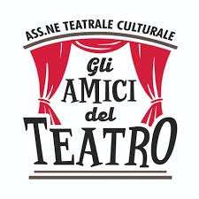
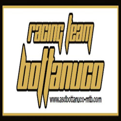
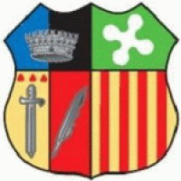
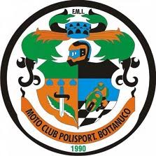
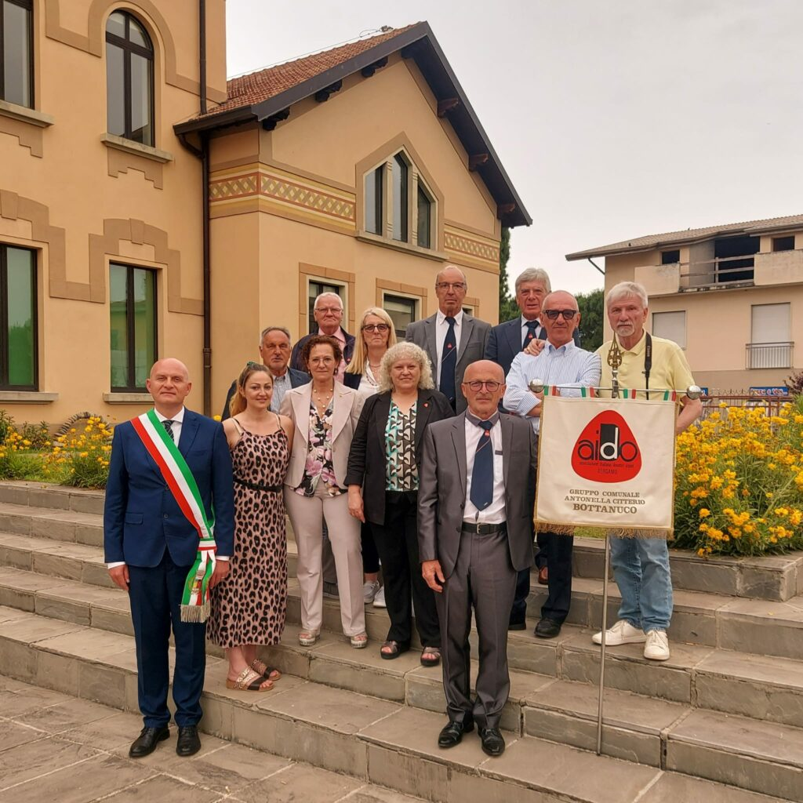
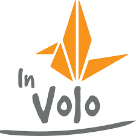